Natural grassland and sparsely vegetated areas
Swin正确 / GAViT错误 · 真实标签：不存在
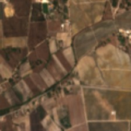
Swin 0.115 · GAViT 0.711
全部真实标签：["Permanent crops", "Complex cultivation patterns", "Broad-leaved forest"]
CSV行号 11957（从0计） · uniform相同验证图片、原有权重；成败阈值0.5。每类保留双向分歧、共同正确和共同错误，并区分真实正负标签。
样本在各组内按固定哈希顺序选择；补充样本仅供案例分析。可用/选中数量见 case_counts.csv，随机验证子集指标见 report.md。
Swin正确 / GAViT错误 · 真实标签：不存在

Swin 0.115 · GAViT 0.711
全部真实标签：["Permanent crops", "Complex cultivation patterns", "Broad-leaved forest"]
CSV行号 11957（从0计） · uniformSwin正确 / GAViT错误 · 真实标签：不存在
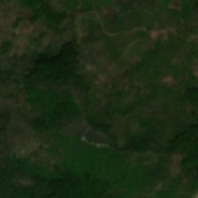
Swin 0.422 · GAViT 0.801
全部真实标签：["Broad-leaved forest", "Coniferous forest", "Transitional woodland, shrub"]
CSV行号 103740（从0计） · uniformSwin正确 / GAViT错误 · 真实标签：存在
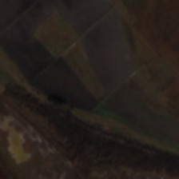
Swin 0.532 · GAViT 0.255
全部真实标签：["Arable land", "Broad-leaved forest", "Natural grassland and sparsely vegetated areas", "Inland wetlands"]
CSV行号 85909（从0计） · uniformSwin正确 / GAViT错误 · 真实标签：存在
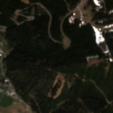
Swin 0.500 · GAViT 0.146
全部真实标签：["Urban fabric", "Pastures", "Coniferous forest", "Natural grassland and sparsely vegetated areas"]
CSV行号 96821（从0计） · uniformGAViT正确 / Swin错误 · 真实标签：不存在
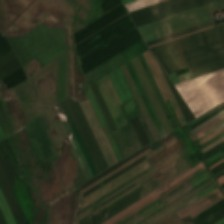
Swin 0.781 · GAViT 0.248
全部真实标签：["Arable land", "Pastures", "Complex cultivation patterns"]
CSV行号 10837（从0计） · uniformGAViT正确 / Swin错误 · 真实标签：不存在
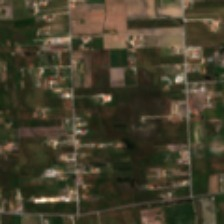
Swin 0.731 · GAViT 0.056
全部真实标签：["Urban fabric", "Arable land", "Complex cultivation patterns"]
CSV行号 109926（从0计） · uniformGAViT正确 / Swin错误 · 真实标签：存在
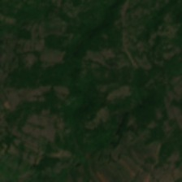
Swin 0.427 · GAViT 0.886
全部真实标签：["Complex cultivation patterns", "Natural grassland and sparsely vegetated areas", "Transitional woodland, shrub"]
CSV行号 105791（从0计） · uniformGAViT正确 / Swin错误 · 真实标签：存在
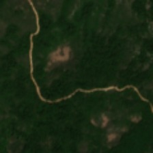
Swin 0.180 · GAViT 0.527
全部真实标签：["Broad-leaved forest", "Natural grassland and sparsely vegetated areas", "Transitional woodland, shrub"]
CSV行号 103891（从0计） · uniform共同正确 · 真实标签：不存在
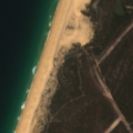
Swin 0.000 · GAViT 0.002
全部真实标签：["Coniferous forest", "Beaches, dunes, sands", "Marine waters"]
CSV行号 11826（从0计） · focus_supplement共同正确 · 真实标签：不存在
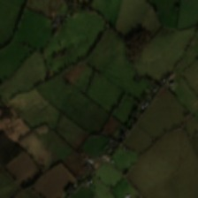
Swin 0.002 · GAViT 0.001
全部真实标签：["Pastures"]
CSV行号 35986（从0计） · uniform共同正确 · 真实标签：存在
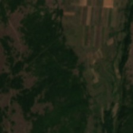
Swin 0.775 · GAViT 0.655
全部真实标签：["Arable land", "Pastures", "Complex cultivation patterns", "Land principally occupied by agriculture, with significant areas of natural vegetation", "Broad-leaved forest", "Natural grassland and sparsely vegetated areas"]
CSV行号 52772（从0计） · uniform共同正确 · 真实标签：存在
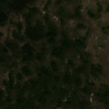
Swin 0.882 · GAViT 0.963
全部真实标签：["Broad-leaved forest", "Mixed forest", "Natural grassland and sparsely vegetated areas", "Transitional woodland, shrub"]
CSV行号 65873（从0计） · uniform共同错误 · 真实标签：不存在
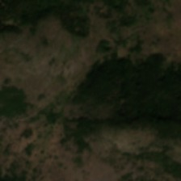
Swin 0.997 · GAViT 1.000
全部真实标签：["Broad-leaved forest", "Transitional woodland, shrub"]
CSV行号 64340（从0计） · uniform共同错误 · 真实标签：不存在
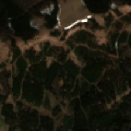
Swin 0.674 · GAViT 0.670
全部真实标签：["Pastures", "Coniferous forest"]
CSV行号 96832（从0计） · uniform共同错误 · 真实标签：存在
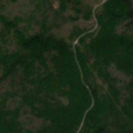
Swin 0.452 · GAViT 0.429
全部真实标签：["Land principally occupied by agriculture, with significant areas of natural vegetation", "Broad-leaved forest", "Natural grassland and sparsely vegetated areas", "Transitional woodland, shrub"]
CSV行号 105788（从0计） · uniform共同错误 · 真实标签：存在
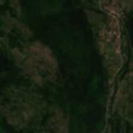
Swin 0.249 · GAViT 0.452
全部真实标签：["Pastures", "Land principally occupied by agriculture, with significant areas of natural vegetation", "Broad-leaved forest", "Coniferous forest", "Natural grassland and sparsely vegetated areas", "Transitional woodland, shrub"]
CSV行号 53227（从0计） · uniformSwin正确 / GAViT错误 · 真实标签：不存在
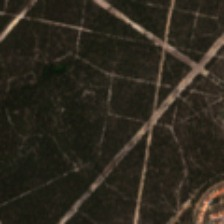
Swin 0.006 · GAViT 0.762
全部真实标签：["Urban fabric", "Coniferous forest"]
CSV行号 109786（从0计） · uniformSwin正确 / GAViT错误 · 真实标签：存在
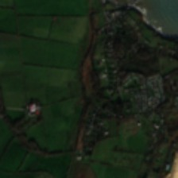
Swin 0.787 · GAViT 0.048
全部真实标签：["Urban fabric", "Pastures", "Beaches, dunes, sands", "Marine waters"]
CSV行号 83548（从0计） · focus_supplementSwin正确 / GAViT错误 · 真实标签：存在
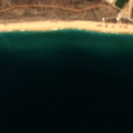
Swin 0.994 · GAViT 0.318
全部真实标签：["Beaches, dunes, sands", "Marine waters"]
CSV行号 19440（从0计） · focus_supplementGAViT正确 / Swin错误 · 真实标签：不存在
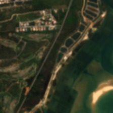
Swin 0.521 · GAViT 0.237
全部真实标签：["Permanent crops", "Land principally occupied by agriculture, with significant areas of natural vegetation", "Moors, heathland and sclerophyllous vegetation", "Coastal wetlands", "Marine waters"]
CSV行号 94065（从0计） · uniformGAViT正确 / Swin错误 · 真实标签：不存在
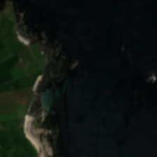
Swin 0.581 · GAViT 0.031
全部真实标签：["Pastures", "Marine waters"]
CSV行号 49689（从0计） · uniformGAViT正确 / Swin错误 · 真实标签：存在
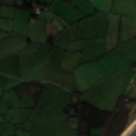
Swin 0.341 · GAViT 0.522
全部真实标签：["Pastures", "Beaches, dunes, sands", "Marine waters"]
CSV行号 83393（从0计） · focus_supplement共同正确 · 真实标签：不存在
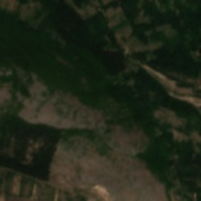
Swin 0.000 · GAViT 0.000
全部真实标签：["Urban fabric", "Complex cultivation patterns", "Natural grassland and sparsely vegetated areas", "Transitional woodland, shrub"]
CSV行号 52994（从0计） · uniform共同正确 · 真实标签：不存在
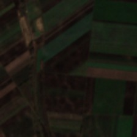
Swin 0.000 · GAViT 0.000
全部真实标签：["Arable land", "Land principally occupied by agriculture, with significant areas of natural vegetation"]
CSV行号 84689（从0计） · uniform共同正确 · 真实标签：存在
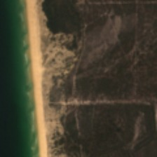
Swin 1.000 · GAViT 1.000
全部真实标签：["Coniferous forest", "Transitional woodland, shrub", "Beaches, dunes, sands", "Marine waters"]
CSV行号 11994（从0计） · focus_supplement共同正确 · 真实标签：存在
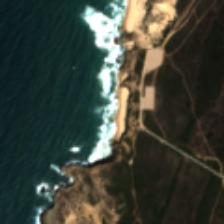
Swin 0.990 · GAViT 1.000
全部真实标签：["Moors, heathland and sclerophyllous vegetation", "Beaches, dunes, sands", "Marine waters"]
CSV行号 93395（从0计） · focus_supplement共同错误 · 真实标签：存在
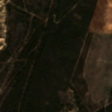
Swin 0.483 · GAViT 0.251
全部真实标签：["Arable land", "Broad-leaved forest", "Moors, heathland and sclerophyllous vegetation", "Beaches, dunes, sands"]
CSV行号 28439（从0计） · focus_supplement共同错误 · 真实标签：存在
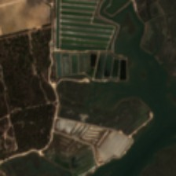
Swin 0.000 · GAViT 0.000
全部真实标签：["Permanent crops", "Broad-leaved forest", "Coniferous forest", "Beaches, dunes, sands", "Coastal wetlands", "Marine waters"]
CSV行号 20934（从0计） · uniformSwin正确 / GAViT错误 · 真实标签：不存在
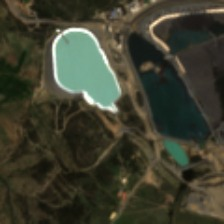
Swin 0.029 · GAViT 0.674
全部真实标签：["Arable land", "Land principally occupied by agriculture, with significant areas of natural vegetation", "Agro-forestry areas", "Transitional woodland, shrub", "Inland waters"]
CSV行号 95355（从0计） · uniformSwin正确 / GAViT错误 · 真实标签：存在
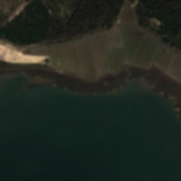
Swin 0.538 · GAViT 0.011
全部真实标签：["Arable land", "Pastures", "Broad-leaved forest", "Coniferous forest", "Coastal wetlands", "Marine waters"]
CSV行号 91192（从0计） · focus_supplementSwin正确 / GAViT错误 · 真实标签：存在
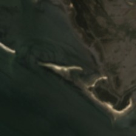
Swin 0.667 · GAViT 0.296
全部真实标签：["Coastal wetlands", "Marine waters"]
CSV行号 109999（从0计） · uniformGAViT正确 / Swin错误 · 真实标签：不存在
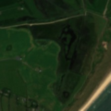
Swin 0.622 · GAViT 0.031
全部真实标签：["Pastures", "Beaches, dunes, sands", "Inland wetlands", "Marine waters"]
CSV行号 4312（从0计） · uniformGAViT正确 / Swin错误 · 真实标签：不存在
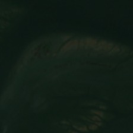
Swin 0.880 · GAViT 0.077
全部真实标签：["Marine waters"]
CSV行号 20932（从0计） · uniformGAViT正确 / Swin错误 · 真实标签：存在
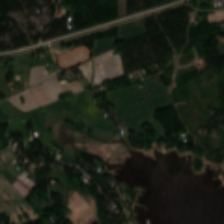
Swin 0.279 · GAViT 0.916
全部真实标签：["Urban fabric", "Arable land", "Land principally occupied by agriculture, with significant areas of natural vegetation", "Coniferous forest", "Mixed forest", "Coastal wetlands", "Marine waters"]
CSV行号 117556（从0计） · focus_supplementGAViT正确 / Swin错误 · 真实标签：存在
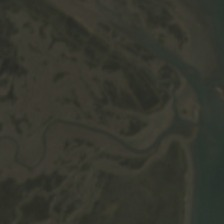
Swin 0.044 · GAViT 0.503
全部真实标签：["Coastal wetlands", "Marine waters"]
CSV行号 12039（从0计） · focus_supplement共同正确 · 真实标签：不存在
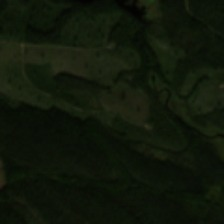
Swin 0.000 · GAViT 0.000
全部真实标签：["Coniferous forest", "Transitional woodland, shrub"]
CSV行号 16274（从0计） · uniform共同正确 · 真实标签：不存在
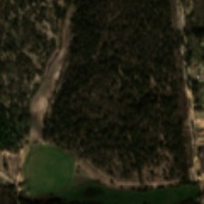
Swin 0.000 · GAViT 0.000
全部真实标签：["Arable land", "Complex cultivation patterns", "Broad-leaved forest", "Mixed forest"]
CSV行号 32780（从0计） · uniform共同正确 · 真实标签：存在
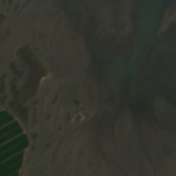
Swin 0.733 · GAViT 0.922
全部真实标签：["Arable land", "Coastal wetlands", "Marine waters"]
CSV行号 11915（从0计） · uniform共同正确 · 真实标签：存在
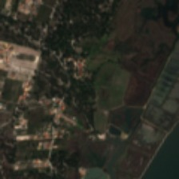
Swin 0.903 · GAViT 0.988
全部真实标签：["Urban fabric", "Complex cultivation patterns", "Broad-leaved forest", "Mixed forest", "Coastal wetlands", "Marine waters"]
CSV行号 90932（从0计） · focus_supplement共同错误 · 真实标签：存在
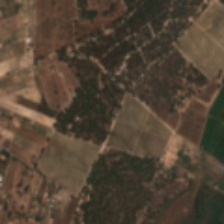
Swin 0.001 · GAViT 0.000
全部真实标签：["Urban fabric", "Arable land", "Permanent crops", "Complex cultivation patterns", "Broad-leaved forest", "Mixed forest", "Coastal wetlands"]
CSV行号 12033（从0计） · focus_supplement共同错误 · 真实标签：存在
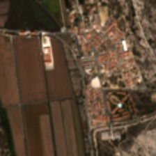
Swin 0.000 · GAViT 0.004
全部真实标签：["Urban fabric", "Arable land", "Coniferous forest", "Transitional woodland, shrub", "Coastal wetlands"]
CSV行号 20880（从0计） · focus_supplement